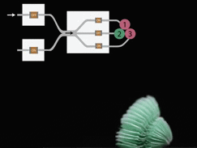

about me.
Hi, my name is Vi (pronounced as Vee)! I am a 2nd-year Mechanical Engineering Ph.D. student advised by
Prof. Tommaso Ranzani
in the Morphable Biorobotics Lab at Boston University.
My research primarily focuses on the design and model-based control of soft robotic systems, with a particular emphasis
on developing an underwater soft robotic platform for seabed locomotion. This work has potential applications for inspection and
sample collection on the ocean's threatened reefs.
Previously, I conducted research under
Prof. Daniel J. Preston
in the PI Lab at Rice University, focusing on textile-based fluidic circuitry.
research.
soft actuators design
Stacked balloon actuators, made from heat- and pressure-bonded layers of sheet films,
have proven effective in soft robotics for performing complex tasks and adapting to space-constrained
environments. However, these actuators are limited by reduced force output at low displacement heights
due to buckling and small retractive forces at high displacement heights from radial collapse under vacuum.
This research introduces a method to mitigate these challenges by introducing a method for integrating
fiber reinforcements. The benefits of this approach are demonstrated in a quadruped soft robot, showcasing
improved force output, actuation speed, and the advantageous use of actuator collapsibility for shape morphing.
Soft, Fiber-reinforced Bellow Actuators
V.T. Vo, L. Zamora Yañnez, C. Muter, A.M. Moran, M. Saxena, G. Matthews, T. Ranzani,
“Soft, Fiber-reinforced Bellow Actuators, 10(2), 2025.
— Article |
Video
fluidic systems for soft robotics

Soft robots offer flexibility and adaptability, particularly in delicate environments,
but fluidic actuation presents challenges in control. Traditional methods, such as solenoid valves,
can hinder movement due to stiffness mismatches between the control system and the soft actuators.
Recent research has focused on integrating control hardware directly into the robot to overcome
these limitations. These works explore two approaches: using electro-pneumatic systems (EPMS)
for reprogrammable electronic valves, and developing a textile-based fluidic diode system that
operates electronics-free, offering computational capabilities.
These approaches aim to enable on-board fluidic control of soft robots by reducing reliance on
external systems.
An Electropermanent Magnet Valve for the Onboard Control of Multi-DoF Pneumatic Soft Robots
A.M. Moran,* V.T. Vo,* K.J. McDonald, P. Sultania, E. Langenbrunner, J.H.V. Chong, A. Naik, L. Kinnicutt,
J. Li, T. Ranzani, Communications Engineering, 3(1), 2024. *equal contribution
— Article |
Video
Sheet-based Fluidic Diodes for Integrated Circuitry in Soft Robotics
V.T. Vo, A. Rajappan, B. Jumet, M.D. Bell, S. Urbina, D.J. Preston,
Advanced Intelligent Systems, 6(7), 2024.
— Article |
Inside Front Cover |
Featured News